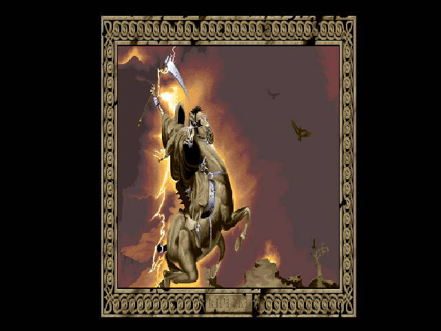

Os Personagens do Armagedom
As portas do inferno estão
abertas !!!
O Armagedom é o início do fim. E é
por isso que me sinto na obrigação de apresentar as figuras
importantes nesse glorioso acontecimento.
O Apocalipse é caracterizado pelo dia
do juízo final, ou seja, o confronto entre Deus e o Demônio
sobre a Terra. Aqui estão os principais personagens e sua importância
nesse evento:
Deus:
Voltará a Terra com a missão de julgar
os pecadores e preparar um novo mundo. Quem não acredita em seu
poder de salvação será punido. O conflito direto com
o Demônio e contra os Cavaleiros do Apocalipse será no céu,
porém todos os seres humanos estarão sujeitos aos residuos
dessa batalha.
O Demônio:
A força do mal que vem para dominar a Terra,
como acreditam muitos estudiosos e religiosos, essa guerra acabará
com a vitória divina, mas isso não significa que o mal não
possua os seus seguidore. Esses seguidores serão pessoas totalmente
sem religião que trarão o número da besta em seu corpo.
Pode não estar tão explícito, mas esses sinais parecerão
na hora da batalha.
Os cavaleiros do Apocalipse:

Esses cavaleiros são citados principalmente
pela Bíblia sagrada. Eles são: A Fome, a Morte, a Peste e
a Guerra. Eles aparecem no trecho do Apocalipse como as desgraças
do homem quando José abriu um livro com sete selos, e cada selo
representava algo. A Guerra saiu do segundo selo, montada em um cavalo
vermelho e recebeu o dom de tirar a paz da Terra. A Fome veio montada em
um cavalo negro com uma balança na mão, dizendo aos homens
que não fizessem mal ao vinho a ao azeite, coisas desnecessárias
ao homem, enquanto o trigo e a cevada seriam vendidos a preços altos.
Um cavalo amarelo saiu do quarto selo e quem o montava era a Morte. A Peste
teria saido do sexto selo que causou um terremoto que obrigou os homens
a morar em cavernas e montes.
Essa interpretação é baseada
na Bíblia sagrada, portanto devemos analisar como esses cavaleiros
são interpretados nos dias de hoje.
Os Anjos:
Como os cavaleiros estão para o mal, os anjos
enviados por Deus também participam desse fato. Seria uma igualdade
com relação as partes. Deus e os anjos estarão lutando
nessa batalha e salvando os escolhidos da tragédia.
Página Anterior
Página
Inicial
Próxima Página